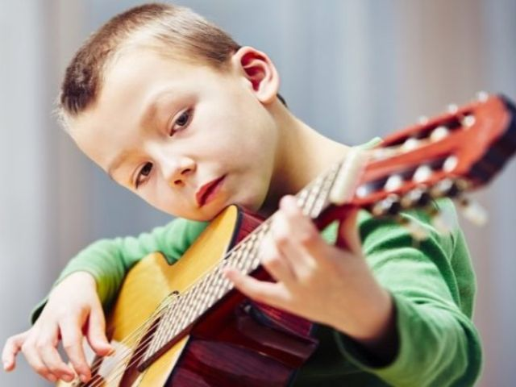
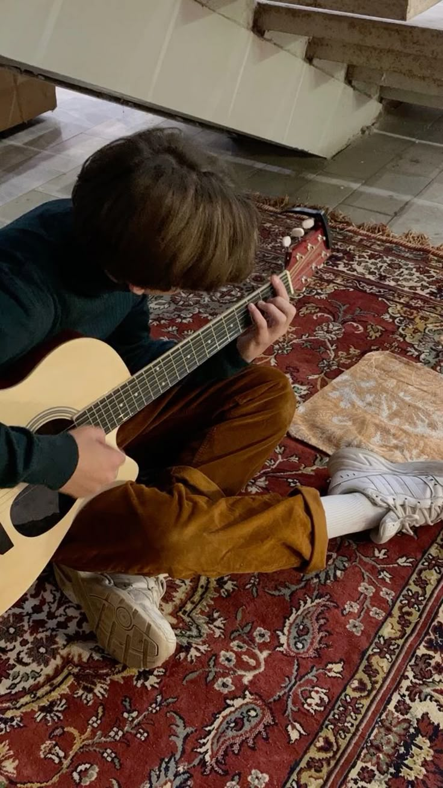
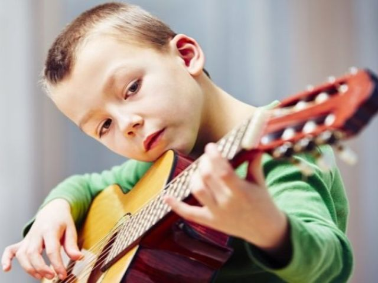
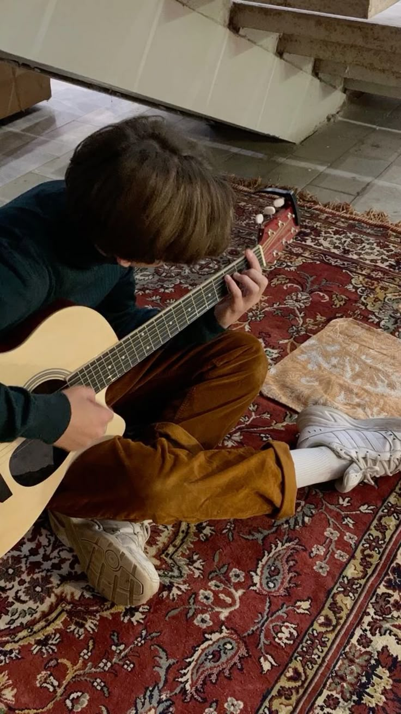

8-800-535-35-35
8-800-535-35-35
Обучение игре на гитаре - сложно и необыкновенно
При всей утонченности, виртуозности, гитара - это народный инструмент. Ее предшественники встречались у арабов, англичан, итальянцев - создателей виолы.
Процесс формирования, развития инструмента длился не один век. В результате народный вариант победил аристократичную виолу. Может, это и добавляет какой-то магии. С одной стороны утонченность и академичность, а с другой - простота и душевность народной музыки.
Обучение игре на гитаре требует огромного труда, терпения и трудолюбия. Существует мнение, что научиться играть на данном музыкальном инструменте могут только люди с хорошим музыкальным слухом. Но мы не согласны с этим. Наши ученики доказали, что слух можно развить, если трудиться, не пасовать перед сложными задачами и любить выбранное дело.
Мы приглашаем Вас на пробное занятие. Наличие опыта не важно. Главное - страстное желание освоить гитару мастерство. А наши преподаватели составят программу, подходящую именно Вам, и сделают занятия настоящим удовольствием.
Как проходят занятия
Индивидуальные и групповые занятия с преподователем
 
Что мы предлагаем
Для начинающих на первых уроках педагог предложит знакомство с устройством музыкального инструмента, изучение его деталей, функциональности, овладение самостоятельной настройкой. Покажет, как держать инструмент, пользоваться смычком. Правильная постановка корпуса тела, рук важна - владение техническими секретами влияет на мастерство. Имеющие опыт ученики начнут разучивать соответствующие уровню произведения, заниматься улучшением техники.
Для детей обучение игре на гитаре проходит по индивидуальным программам, соответствующим государственным образовательным нормам. В школе регулярно проходят отчетные концерты - детские и взрослые. Это необходимое дополнение к урокам, так как начинающие музыканты могут отточить свое мастерство и похвастаться достижениями.
Стоимость обучения
Сколько стоят самые популярные курсы?
"Юный гитарист"
2999₽
"Старт в музыке"
4999₽
"Виртуозные горизонты"
7999₽
Зачем вам это нужно?
Тонкий в проявлении эмоций инструмент притягивает людей тонкой душевной организации, горячо любящих музыку. Звуки гитаре сродни человеческому голосу - умеет плакать, смеяться, тосковать, веселиться, страдать. Обучение гитаре открывает огромные перспективы. Инструмент востребован в классической музыке, эстрадной, в экспериментальных направлениях.
Наши преподаватели
Опытные преподаватели займутся Вашим обучением
Курицкая Валентина
Заняла 1-е место в конкурсе "Мисс гитара"
Воронина София
Окончила курсы по игре на гитаре в Лондоне
Кириешкина Мария
Солист группы "Кириешки"
Карпова Наталья
Получила красный диплом в муз. школе

Есть вопросы? Нужна консультация?
Оставьте заявку на сайте, и наши специалисты ответят на все Ваши вопросы!